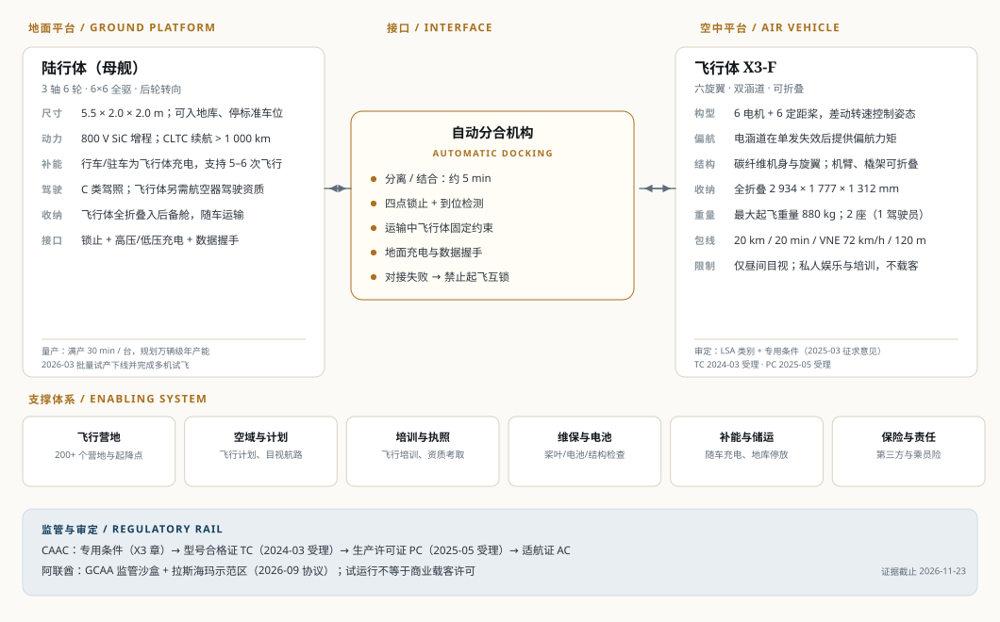
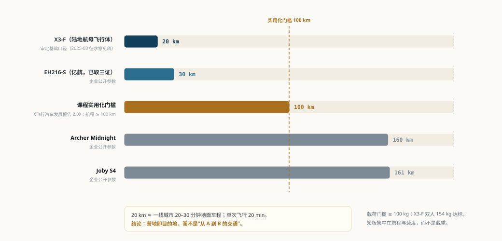
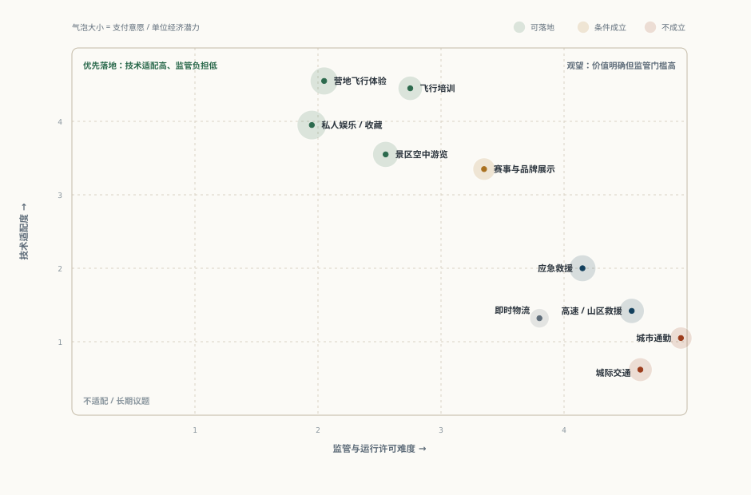
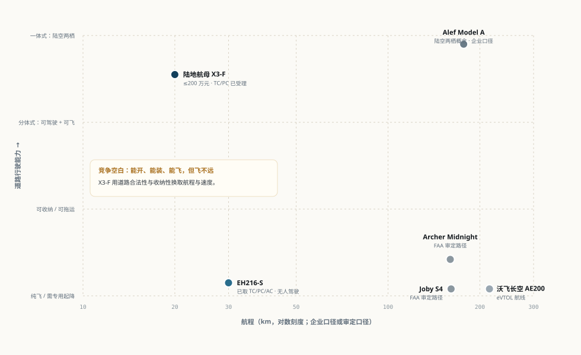

飞行汽车，还是
会飞的露营装备？
小鹏汇天「陆地航母」的全方位调研：从 20 km / 20 min 的审定包线出发，检验它的技术账、场景账与市场账。 结论先说——载荷够、航程不够；体验成立、通勤不成立；订单是真的，收入还不是。
01执行摘要Executive summary
如果只看发布会，陆地航母是“全球首款量产分体式飞行汽车”；如果看民航局的专用条件，它是一架 最大起飞重量 880 kg、航程 20 km、航时 20 min、仅限昼间目视、不用于商业载客的轻型运动类航空器， 外加一台能把它装进后备舱的 6×6 增程汽车。两个描述都真实，但它们指向完全不同的商业命题。
- 技术可行，但要分层说。“能造出来、能量产、能取证”已由产线下线、PC 受理与 UAE 沙盒试运行给出较强证据； “能作为交通工具”则被 20 km 航程与 72 km/h VNE 明确否定。技术可行性的真实结论是：工程化可行，运输化不成立。
- 短板不在载重，而在航程与速度。双人 154 kg 已越过课程提出的 100 kg 载荷门槛，但 20 km 只有 100 km 航程门槛的 1/5。 换言之，它的问题不是“带不动人”，而是“带人飞不远”。
- 场景的第一性约束是半径。20 km 决定了“营地即目的地”：从营地起飞、在营地周边看风景、回营地降落。 这恰好匹配企业已布局的 200+ 飞行营地，也解释了为什么通勤、城际、应急物流都不成立。
- 市场是“超高端体验 + 营地运营”的双边生意。7000 台累计订单是强需求信号，但意向金仅 1 万元、年交付能力数百台量级， 订单与交付之间存在明显的时间错配；真正的收入取决于营地能否做到每日 3 架次以上、客单价 1,500 元以上。
- 竞争壁垒是“形态”而不是“性能”。与 EH216-S、Joby S4 比航程是必输的；它唯一不可替代的是 “C 照能开、能进地库、飞行体收进后备舱”这一整套使用方式。壁垒在系统集成与使用场景，不在单点技术指标。
- 最大的不确定性是适航节奏。TC 受理至今已近三年，公开信息显示仍未颁发；而“完成适航取证后才能规模化交付”是硬约束。 因此所有市场预测都应以“取证时间”为第一变量，而不是以订单数为第一变量。
它是一个把航空器做成消费品的工程样本，而不是一个交通产品。评价它时，用“体验产品”的尺子（可用率、客单价、复购、营地密度） 比用“交通工具”的尺子（航程、速度、单位里程成本）更公平，也更能解释它为什么这样设计。
02研究设计与证据边界Method & evidence
2.1 对象界定：一艘“航母”，三个系统
把“陆地航母”当成一辆车或一架飞机都会失真。本文按三个系统界定研究对象，并在后文分别评估：
S1 陆行体（地面平台）
- 3 轴 6 轮、6×6 全驱、后轮转向，约 5.5 × 2.0 × 2.0 m
- 800 V SiC 增程平台，CLTC 续航 > 1 000 km
- 为飞行体充电、承载与固定、自动对接
- 按乘用车管理：C 类驾照、可入地库
S2 飞行体 X3-F（空中平台）
- 六电机 + 六定距桨，差动转速控制姿态
- 电涵道在单发失效后提供偏航力矩
- 碳纤维机身，机臂/橇架/桨叶可折叠
- 按轻型运动航空器（LSA）审定
S3 是运行系统：营地、空域与飞行计划、培训与执照、维保与电池、保险。它不是产品的附属品，而是产品能否被使用的前提—— 这一点在第五章“支撑保障”里被反复强调，也是本文把营地密度当作市场第一变量的原因。[14]
2.2 证据分级：先问“这条信息能证明什么”
课程第四章给出的检索阶梯是“了解 → 入门 → 基础 → 进阶 → 创新 → 应用”。[15] 但阶梯只解决“去哪找”，不解决“信多少”。本文在阶梯之上加了一层证据分级：
| 等级 | 来源类型 | 能证明什么 | 不能证明什么 | 本文用法 |
|---|---|---|---|---|
| A | 民航局专用条件、CCAR-21-R5、法律条文、适航审定历程 | 设计特征、运行限制、审定基础、合法运行边界 | 产品性能优劣、市场接受度 | 作为产品定义的基准，优先于一切企业口径 |
| B | 企业官网、量产下线、订单与价格披露、供应链定点公告 | 企业声称什么、产线是否运转、供应链是否就位 | 是否已取得 TC、是否可持续交付 | 用于工程化与量产判断，标注“企业口径” |
| C | 媒体转述、行业报告、券商与咨询预测 | 事件发生、时间线、市场情绪 | 精确参数、技术细节 | 仅用于交叉核验与时间线，不单独支撑结论 |
| D | 本文的能量/成本/概率估算 | 数量级是否自洽、敏感性方向 | 任何精确值 | 必须给出公式与假设，只用于“是否可能” |
2.3 检索记录与筛选
| 阶梯 | 检索对象 | 得到的关键材料 | 用途 |
|---|---|---|---|
| 了解 | 产品视频、发布会、B 站/YouTube | 分体式动作、自动对接演示 | 建立直观印象，不作为证据 |
| 入门 | 企业官网、公众号、知乎 | 三步走战略、营地计划、价格区间 | 形成问题清单 |
| 基础 | 行业报告、白皮书、综述 | 《飞行汽车发展报告 2.0》的场景与门槛框架 | 提供评价标尺 |
| 进阶 | 民航局文件、适航审定信息、供应链公告 | X3-F 专用条件、TC/PC 受理、量产下线、UAE 交付 | 构成一手证据链 |
| 创新 | 自建估算与模型 | 悬停功率、能量、单位经济、失效树 | 检验自洽性 |
| 应用 | 法规、运营、保险、营地 | 运行限制、监管沙盒、培训体系 | 判断落地条件 |
某行业媒体在 2026 年 1 月的车色新闻中称飞行体“巡航速度 360 km/h、最大航程超 500 km”。这与民航局专用条件给出的 VNE 72 km/h、最大航程 20 km 相差一个数量级。[1] 本文判定该表述为错误转述或把陆行体指标混入飞行体，不采用。这个例子说明：越是“亮眼”的数字，越要先问它出自哪份文件。
2.4 方法映射：三次“对齐”
- 对齐第五章的三大支柱：产业应用（场景与商业模式）、技术创新（构型/动力/安全飞行/智能驾驶/智慧管控）、支撑保障（基础设施与法规）。本文第 5–7 节按这三条线展开。
- 对齐第五章的场景双线：专业化路径（刚需 → 增值）与大众化路径（文旅 → 枢纽接驳 → 区域交通 → 城市成网）。本文用它判断“现在处在第几阶段”。
- 对齐第五章的技术瓶颈：载荷航程、适航安全、智能驾驶。本文把它们转成三个可检验的问题：能量够不够、取证走到哪、运行靠谁。
03产品定义与谱系Product definition
3.1 一条清晰的产品路线：先卖“能飞的体验”，再谈“空中交通”
小鹏汇天公开的“三步走”是理解这款产品的钥匙：第一步，用分体式陆地航母切入限定场景的飞行体验与公共服务， 以规模化销售带动产业链与生态；第二步，推出高速长航程 eVTOL 解决典型场景的空中交通；第三步，才是陆空一体式、门到门的 3D 交通。[3] 换句话说，陆地航母被明确定位为“打开市场的第一代产品”，而不是终局形态。这一点对企业是战略，对研究者是重要的解释变量： 用终局形态的标准去批评第一代产品，会错判它的设计意图。
A 轮融资超 5 亿美元，创当时亚洲低空载人飞行器领域单笔融资纪录。
X3-F 型号合格证（TC）申请获民航中南局受理，申请类别为轻型运动航空器（LSA），进入适航审定阶段。[1]
广州开发区飞行汽车智造基地动工，首期约 18 万 m²，规划年产能 1 万台（飞行体）。
民航局就 X3-F 型航空器专用条件公开征求意见，明确 880 kg / 20 km / 20 min / 昼间目视 / 不商业载客。[1]
生产许可证（PC）申请获民航中南局受理；累计预售订单超 4 000 台。[4]
迪拜完成海外首次有人驾驶公开飞行，并签下 600 台订购协议。[8]
汇天进入首批民用载人 eVTOL 适航审定合规企业名录（第三方梳理口径）。[8]
与拉斯海玛酋长国签署战略合作，在阿联酋民航局监管下共建 AAM 监管沙盒，启动阿布扎比—拉斯海玛航线规划。[8]
首架量产工艺的 X3-F 试验用机交付阿联酋，用于沙盒试运行——交付的是试验用机，不是取得 TC 的商品机。[7]
公开报道确认：TC/PC 仍处受理与审查阶段，“完成适航取证后才能规模化交付”；计划 2026 年四季度启动量产交付。[6]
3.2 型号参数：以审定文件为准
下表只采用两类来源：民航局专用条件（A 级）与企业公开披露（B 级）。两者冲突时以 A 级为准，并注明差异。
| 项目 | 数值 | 口径 / 说明 |
|---|---|---|
| 最大起飞重量 | 880 kg | 审定口径；专用条件另一处以“不超过 960 kg”界定适用范围 |
| 外形尺寸（展开） | 6 834 × 6 340 × 1 923 mm | 审定口径 |
| 外形尺寸（全折叠） | 2 934 × 1 777 × 1 312 mm | 审定口径；决定能否收进后备舱 |
| 最大航程 | 20 km | 审定口径 |
| 最大航时 | 20 min | 审定口径 |
| 不可超越速度 VNE | 72 km/h | 审定口径 |
| 最大飞行高度 | 120 m（AGL）/ 2 500 m（MSL） | 审定口径；AGL 为离地高度 |
| 动力构型 | 6 台电动发动机 + 6 副定距桨 | 差异转速控制姿态；电涵道提供偏航备份 |
| 乘员 | 1 名驾驶员 + 最多 1 名乘客 | 审定口径；乘员按 77 kg/人设计 |
| 运行条件 | 仅昼间目视（VMC） | 不得仪表飞行、不得夜间运行 |
| 预期用途 | 私人娱乐飞行；可开展飞行培训；不用于商业载客 | 这决定了它的监管身份与安全目标 |
| 陆行体 | 3 轴 6 轮 · 5.5 × 2.0 × 2.0 m · 800 V 增程 · CLTC > 1 000 km | 企业口径；C 照驾驶，可入地库 |
| 补能 | 陆行体可为飞行体充电，支持 5–6 次飞行 | 企业口径；与能量估算存在张力，见 §5.2 |
| 价格 | ≤ 200 万元 | 企业口径；意向金 1 万元（媒体报道） |
3.3 三种“飞行汽车”形态，三种完全不同的命题
| 形态 | 代表 | 优势 | 核心难题 | 对陆地航母的意义 |
|---|---|---|---|---|
| 纯飞式 eVTOL | EH216-S、Joby S4 | 气动效率高、航程远、适航路径清晰 | 仍需专用起降场，地面接驳断裂 | 性能上限的参照系，不是直接竞品 |
| 分体式 | 陆地航母、广汽 GOVE | 飞行体不必满足道路法规；陆行体解决运输、补能、存放 | 分离/对接机构、重量代价、两次适航 | 用“形态”换取使用便利，代价是航程 |
| 一体式（两栖） | Alef Model A 等 | 门到门、无需转运 | 道路与航空双重法规、重量与折叠矛盾 | 终局形态，但工程与监管难度最高 |
分体式的本质是把“航空器”与“道路车辆”解耦：飞行体只需满足航空要求，陆行体只需满足汽车要求，两者通过机械与电气接口耦合。 这避免了“一体式”最难的部分（同一套结构同时满足坠撞与道路碰撞、同一套动力同时满足巡航与高速行驶），但也引入了新的失败模式—— 接口。这一点在作业二会被展开为“分体式特有风险”。
04系统架构与关键技术Architecture

4.1 五个技术域，逐一对照课程框架
课程把飞行汽车技术体系拆成“三大技术域 + 五大关键技术”：构型总体、动力推进、安全飞行、智能驾驶、智慧管控。[16] 用这个框架看陆地航母，可以看出它的技术投入明显偏向“构型总体”和“动力推进”，而在“智能驾驶”和“智慧管控”上相对保守。
| 技术域 | 关键技术 | 陆地航母的具体做法 | 成熟度 | 判断依据 |
|---|---|---|---|---|
| 构型总体 | 折叠与收纳 | 机臂、四点橇架、中机臂桨叶可折叠；全折叠 2 934 × 1 777 × 1 312 mm | 已量产 | 批量下线与专用条件条款（X3.612/729） |
| 构型总体 | 分合机构 | 陆行体自动寻找、精准对接；四点锁止与到位检测 | 已演示 | 公开演示 + 企业描述；无第三方测试数据 |
| 动力推进 | 高倍率电池 | 高硅高镍电芯，峰值 25C，持续功率约为电动车 10 倍 | 已量产 | 电芯由中创新航供应、PACK 自研（供应链报道） |
| 动力推进 | 分布式电推进 | 6 路独立电推进单元，2026-08 第 1 000 套下线 | 已量产 | 产线节拍与部件下线 |
| 安全飞行 | 电传飞控 + 保护功能 | 姿态角/偏航率/过载/速度限制；单点失效不得灾难性 | 已设计 | 专用条件 X3.1331 的要求；实现细节未公开 |
| 安全飞行 | 偏航备份 | 电涵道在任一电机失效后提供偏航力矩 | 已设计 | 专用条件 X3.1433 专门条款 |
| 智能驾驶 | 手动/自动双模式 | 单杆操纵，飞控毫秒级响应；未见自主航线能力披露 | 已设计 | 企业口径；与 EH216-S 的全自主路线不同 |
| 智慧管控 | 空域与运行 | 依赖营地与地方空域管理，无自建 UTM 披露 | 未公开 | 未见相关系统与资质信息 |
4.2 真正难的不是“飞”，是“装”
六旋翼飞行器本身不是新技术。陆地航母真正的工程难点有三个，且都不在空气动力学上：
- 折叠后的结构完整性。机臂与桨叶的折叠锁定机构必须在飞行中绝不解锁（专用条件为此单列 X3.612 与 X3.729）， 同时又要在地面反复折叠数万次而不失效。这是一个“航空级可靠性 + 消费级使用频次”的矛盾。
- 接口的容错。分合机构要完成“自动寻找—对准—锁止—充电—数据握手”，任何一步失败都必须导向“禁止起飞”，而不是“带病起飞”。 接口因此不只是机械件，而是安全互锁的一部分。
- 重量预算。880 kg 里要装下 6 套电推进、电池、飞控、折叠机构、座舱与两名乘员，任何一项超重都会直接吃掉航时。 这解释了为什么它只能做到 20 min——不是不想飞久，是重量与能量密度不允许。
第五章指出，飞行汽车的技术同源度很高（新能源汽车三电约 70% 可迁移），但“技术同源不等于体系等价”，必须按航空适航体系重构。[16] 陆地航母正是这句话的样本：电池、电机、电控来自汽车供应链，但 BMS 的单点失效准则、电池的热失控隔离、飞控的软件保证等级，全部要按航空逻辑重做。
05技术可行性Technical feasibility
5.1 物理账：20 分钟是不是“设计不出来更久”？
多旋翼的悬停功率由动量理论给出：Pi = T3/2 / √(2ρA)，其中 T 为总拉力、ρ 为空气密度、A 为总桨盘面积。 再除以品质因数（FM，约 0.65–0.75）并计入传动与型阻损失，就得到轴功率的量级。关键未知量是桨盘直径——公开资料没有给出， 因此本文用 2.4 m 与 3.2 m 两个边界值做区间估算，而不是假装知道精确值。
| 参数 | 小桨径方案 | 大桨径方案 | 说明 |
|---|---|---|---|
| 单桨直径 D | 2.4 m | 3.2 m | 公开资料未披露，取工程常见区间 |
| 总桨盘面积 A | 27.1 m² | 48.3 m² | 6 副桨 |
| 总拉力 T（悬停） | 8 633 N | 8 633 N | 880 kg × 9.81 |
| 理想诱导功率 Pi | 98 kW | 74 kW | 动量理论 |
| 计入 FM 与损失后功率 | ≈ 152 kW | ≈ 111 kW | FM 0.70 / 0.72，+8% |
| 20 min 耗能 | ≈ 51 kWh | ≈ 37 kWh | 悬停近似 |
| 含 15% 余量电池容量 | ≈ 60 kWh | ≈ 44 kWh | 不含老化与低温衰减 |
| 单位航程能耗（60 km/h） | 2.5 kWh/km | 1.9 kWh/km | 约为纯电汽车的 12–17 倍 |
| 交叉校验：若最大推力为悬停推力的 2 倍，单桨需 2 878 N，总推重比约 2.0——与企业“整机推重比大于 2”的口径一致，说明该估算的量级是自洽的。 | |||
结论是：20 min 不是营销数字，而是能量与重量预算的必然结果。880 kg 的起飞重量里，电池只能占很小一部分； 在现有电芯能量密度（约 250–300 Wh/kg 系统级）下，想把航时翻倍，要么把电池重量翻倍（结构吃不消），要么把桨盘做大（收纳尺寸不允许）， 要么换动力形式（增程/混动，但飞行体是纯电）。这正是课程所说“载荷航程是飞行汽车第一瓶颈”的具体表现。[16]
5.2 “5–6 次补能”与能量预算的张力
企业口径称陆行体可为飞行体补能 5–6 次。把上表代进去，会产生一个必须解释的矛盾：若单次飞行耗能 37–51 kWh， 5–6 次就是 185–306 kWh，远超一台 5.5 m 增程车常规的电池容量（通常 40–80 kWh）。可能的解释有三种：
| 解释 | 含义 | 一致性 | 如何验证 |
|---|---|---|---|
| H1：靠增程器边充边飞 | 陆行体启动增程器持续发电，补能时间较长（小时级） | 自洽 | 公开“从 20% 充到 100% 需多久” |
| H2：飞行体电池实际更小 | 单次耗能远低于估算（如 10–15 kWh），意味着航时或功率被高估 | 部分自洽 | 公布电池容量或典型架次耗电量 |
| H3：口径含“应急补能” | 5–6 次指短途/低载荷飞行的补能次数，不是满载 20 min | 可能 | 公布不同任务剖面的耗能曲线 |
5.3 与课程门槛的对比：载荷够，航程不够
《飞行汽车发展报告 2.0》提出，飞行汽车要满足基本规模化实用要求，载荷应 ≥ 100 kg、航程应 ≥ 100 km。[14] 把 X3-F 放上这把尺子：载荷 154 kg（2 × 77 kg）达标；航程 20 km 仅为门槛的 20%；VNE 72 km/h 也远低于“城际”所需的巡航速度。

这个对比的价值不在于“批评它飞不远”，而在于确定它属于哪一类产品：30 km 以内是“体验半径”，100 km 以上才是“交通半径”。 用交通半径的标准要求它，会得出“技术失败”的错误结论；用体验半径的标准看它，20 km 恰好覆盖一个景区或一个营地的活动范围。
5.4 适航路径：LSA 是一条“聪明但有限”的路
X3-F 的 TC 申请类别是轻型运动航空器（LSA），而不是运输类旋翼航空器。由于“电动多旋翼”没有现成适航标准， 民航局按 CCAR-21-R5 为其制定专用条件作为审定基础。[1][17] 这条路径的聪明之处在于：它把安全目标与“私人娱乐、昼间目视、不商业载客”的预期用途绑定，从而避免了运输类 10⁻⁹ 的灾难性失效概率要求。
| 节点 | 时间 | 状态 | 说明 |
|---|---|---|---|
| TC 申请受理 | 2024-03 | 已完成 | 民航中南局受理，类别 LSA |
| 专用条件征求意见 | 2025-03 | 已完成 | 确定审定基础与运行限制 |
| PC 申请受理 | 2025-05 | 已完成 | 生产体系与质量系统审查启动 |
| TC 颁发 | — | 未见公开信息 | 截至 2026-11-23，报道仍称“完成取证后才能规模化交付” |
| AC（适航证） | — | 未开始 | 单机适航，通常在 TC 之后 |
| 参照：EH216-S 从 TC 受理（2021-01）到取证（2023-10）约 33 个月；X3-F 从受理至今约 32 个月，节奏并不异常，但“最后一段”往往最长。 | |||
需要特别指出：LSA 路径是“以用途换标准”。专用条件明确“不用于商业载客”，这意味着它不能像 EH216-S 那样直接做空中游览载客运营； 若要商业载客，需要重新界定审定基础（更接近 SC-VTOL / CCAR-29 的逻辑），安全目标与符合性证据都要重做。 这是作业二要展开的核心判断：它的安全案例只在其预期用途内成立。
5.5 制造与供应链：量产能力已经可见
- 产线节拍：广州工厂建筑面积约 12 万 m²，满产状态每 30 min 下线一台飞行体；2026-03 已有 5 台同日下线并完成多机试飞。[5]
- 部件爬坡：2026-08 第 1 000 套电推进单元下线，说明核心部件已进入批量制造，而不是手工样机。
- 供应链就位：电芯由中创新航供应、PACK 自研；孚能科技（高压电池/连接器）、亿纬锂能（低压锂电池）、方正电机（驱动）、威迈斯（车载电源，已批量供货）、东安动力（增程器）等已获定点。[8]
- 但“定点 ≠ 订单”：东安动力在风险提示公告中明确，2026 年 1–9 月该业务尚未形成收入。供应链的“就位”是开发资格，不是批量采购。
制造可行性是三件事里最扎实的：有厂房、有节拍、有部件下线、有供应商定点。真正的瓶颈不在“造得出来”，而在“取证之后能不能持续按航空级一致性交付”—— 后者取决于质量体系（PC）而不是产能。
5.6 三层结论：演示可行、工程化待验证、运输化不成立
| 层级 | 问题 | 现有证据 | 判定 |
|---|---|---|---|
| L1 演示可行 | 能不能飞、能不能分离结合、能不能量产下线 | 公开飞行、5 台同日下线、多机试飞、UAE 交付 | 已成立 |
| L2 工程化可行 | 能不能稳定重复、能不能通过审定、能不能按节拍交付 | TC/PC 受理、专用条件、产线节拍、供应链定点 | 待验证 |
| L3 运输化可行 | 能不能承担 A 到 B 的交通职能 | 20 km / 20 min / 72 km/h / 不商业载客 | 不成立 |
06应用场景Use scenarios
6.1 用课程的双线框架定位
第五章把场景分成两条线：专业化（公共安全与行业效率，从刚需走向增值）与大众化（文旅 → 枢纽接驳 → 区域交通 → 城市成网）。[16] 陆地航母的位置非常明确：大众化路径的第一阶段“低空文旅先行”，叠加专业化路径中的“飞行培训”。 它既没有进入枢纽接驳（需要 100 km 级航程与城市空域），也不可能进入城市成网（需要适航等级与密度运行）。

6.2 逐场景判断
| 场景 | 技术适配 | 监管难度 | 支付意愿 | 替代品 | 结论 |
|---|---|---|---|---|---|
| 营地飞行体验 | 5 | 2 | 5 | 直升机观光、热气球、滑翔伞 | 立即成立 |
| 飞行培训 | 4 | 3 | 4 | 轻型运动飞机、旋翼机培训 | 成立（专用条件明确允许） |
| 私人娱乐 / 收藏 | 4 | 2 | 5 | 超跑、游艇、私人飞机 | 成立（核心客群） |
| 景区空中游览 | 4 | 3 | 4 | 索道、观光直升机 | 条件成立（需运营资质，非商业载客限制待解） |
| 赛事 / 品牌展示 | 3 | 4 | 3 | 特技飞行、无人机灯光秀 | 项目制 |
| 应急救援 / 医疗 | 2 | 5 | 4 | 直升机、救护车 | 不成立（载重与航程不足） |
| 高速 / 山区救援 | 2 | 4 | 4 | 直升机、无人机投送 | 不成立（20 km 半径 + 单乘客） |
| 城市通勤 / 城际 | 1 | 5 | 3 | 地铁、网约车、高铁 | 不成立 |
| 即时物流 | 2 | 4 | 2 | 多旋翼无人机 | 不成立（载人平台做物流无成本优势） |
6.3 营地单位经济：这门生意的生死线是“日架次”
体验场景能否成立，最终取决于营地能否赚钱。用一个简化的单机模型（营地自购一台陆地航母 + 基础起降场地）测算：
| 项目 | 保守（1.5 架次/日） | 基准（3 架次/日） | 积极（5 架次/日） |
|---|---|---|---|
| 年架次（300 天） | 450 | 900 | 1 500 |
| 客单价 | 1 200 元 | 1 500 元 | 2 000 元 |
| 年收入 | 54 万元 | 135 万元 | 300 万元 |
| 固定成本 | 88 万元 | 88 万元 | 88 万元 |
| 变动成本 | 4.5 万元 | 9 万元 | 15 万元 |
| 年利润 | −38.5 万元 | +38 万元 | +197 万元 |
| 投资回收期 | 不可回收 | ≈ 9 年 | ≈ 1.8 年 |
| 保本架次 ≈ 88 万元 ÷ 1 400 元 ≈ 629 架次/年 ≈ 2.1 架次/日。这意味着“每天飞两趟”只是生死线，不是好生意。 | |||
这个模型解释了两件事：第一，为什么企业要自建 200+ 营地——营地是获客与运营的入口，而不是配套；第二，为什么“5–6 次补能”的补能时间如此关键—— 如果每次补能需要数小时，日架次就被物理锁死在 2–3 次，基准情景都难以达到。
07市场可行性Market feasibility
7.1 不要用“万亿低空经济”乘市场份额
公开预测称 2026 年低空经济规模有望突破万亿元（赛迪顾问乐观口径，经媒体转述）。[3] 这个数字包含无人机、通用航空、基础设施与服务，不能直接用于估算一款 200 万元载人飞行器的市场。 更严谨的做法是自下而上建漏斗：
| 层级 | 筛选条件 | 数量（台/户） | 依据 |
|---|---|---|---|
| TAM 锚点 | 中国亿元资产家庭 | ≈ 130 000 | 数量级锚点（假设） |
| SAM-1 | × 对“亲自飞行”有支付意愿 8% | ≈ 10 400 | 教学假设 |
| SAM-2 | × 位于营地/城市覆盖圈 50% | ≈ 5 200 | 200+ 营地分布假设 |
| SOM（累计） | × 最终转化 40% | ≈ 2 080 | 教学假设 |
| SOM（金额） | × 200 万元 | ≈ 42 亿元 | 累计口径，非年度 |
| 对照：企业称累计订单 7 000+ 台（2026-10 口径）。订单高于本文 SOM 估算，说明订单中包含大量低门槛意向（1 万元意向金）与 B 端/营地点单，不能等同于最终交付。 | |||
7.2 订单、产能与交付：三个数字不在同一时间尺度上
产能不等于交付。交付受三件事约束：TC 取证时间、飞行员/操作员培训速度、营地与空域配套。 若 2027 年交付 300–600 台，消化 7 000 台订单需要 6–12 年——这不是需求不足，而是交付能力与订单规模错配。 对企业，这意味着排队与口碑风险；对研究，这意味着“订单数”不能作为收入预测的输入，只能作为需求信号。
7.3 敏感性：价格、交付量与转化率
下表把“价格 × 年交付量 × 订单转化率”做成三档敏感性。它不预测企业业绩，只回答“在什么组合下这门生意有意义的量级”。
| 单价 \ 年交付 | 300 台 | 600 台 | 900 台 |
|---|---|---|---|
| 160 万元 | 3.4 | 6.7 | 10.1 |
| 200 万元 | 4.2 | 8.4 | 12.6 |
| 240 万元 | 5.0 | 10.1 | 15.1 |
| 按 25% 毛利估算，上述组合对应毛利 0.9–3.8 亿元/年，需覆盖研发、适航、营地与售后体系。 | |||
7.4 拥有成本：200 万元只是入场券
| 项目 | 金额 | 说明 |
|---|---|---|
| 购机 | 200 万元 | 价格上限口径 |
| 飞行执照与培训 | 10–20 万元 | 运动类/私用驾驶员训练量级 |
| 保险（5 年） | 30–50 万元 | 机身 + 第三方责任，随运行小时上升 |
| 维护与桨叶/电池更换 | 40–60 万元 | 电池按 5 年更换估算 |
| 营地/停机与空域服务 | 20–40 万元 | 按年费 4–8 万元估算 |
| 五年合计 | 300–370 万元 | 约为购机价的 1.5–1.9 倍 |
7.5 政策变量：比产品参数更重要
2025 年 12 月修订通过的《民用航空法》自 2026 年 7 月 1 日施行，共 16 章 262 条，专门增加了无人驾驶航空器适航审定、低空空域资源配置与低空经济促进条款。[13] 对这款产品，最重要的不是“政策支持”四个字，而是三条具体制度：无人驾驶航空器的差异化适航审定（决定取证节奏）、 空域分类与飞行管理（决定营地能否常态化运行）、地方低空经济发展规划（决定营地土地与补贴）。 三者缺一，产品就只能停在“能飞但不能常态化飞”。
08竞争格局Competition

| 产品 | 形态 | 航程 | 速度 | 取证状态 | 对陆地航母的威胁 |
|---|---|---|---|---|---|
| 陆地航母 X3-F | 分体式，可驾驶 | 20 km | VNE 72 km/h | TC/PC 受理，未取证 | — |
| EH216-S（亿航） | 纯飞，无人驾驶 | 30 km | 130 km/h | TC/AC/PC/OC 齐全 | 高：已可商业运营，先发优势明显 |
| 广汽 GOVE | 分体式 | 未公开 | — | 研发/演示阶段 | 中：同形态、同区域、同供应链 |
| 沃飞长空 AE200 | 纯飞 eVTOL | ≈ 200 km 级 | — | 审定推进中 | 中：面向城际，场景不重叠 |
| Joby S4 | 纯飞 eVTOL | ≈ 161 km | ≈ 322 km/h | FAA 审定路径 | 低：市场与价格带不同 |
| Archer Midnight | 纯飞 eVTOL | ≈ 160 km | ≈ 240 km/h | FAA 审定路径 | 低：同上 |
| Alef Model A | 一体式两栖 | ≈ 170 km（企业口径） | — | 概念/早期 | 低：形态理想但证据弱 |
陆地航母的差异化可以用一句话概括：它是唯一“C 照能开、能进地库、飞行体收进后备舱”的方案。 这个差异化不体现在任何单项性能上，而体现在“使用方式”上：不需要专用机库、不需要拖车、不需要机场，开到营地就能飞。 对高净值用户，这解决的是“存放与运输”的真实痛点；对营地，这解决了“设备周转”的痛点。竞争壁垒因此是系统集成 + 渠道 + 营地网络，而不是电池或飞控。
09风险登记册Risk register
| 编号 | 风险 | 可能性 | 影响 | 缓释 / 观测指标 |
|---|---|---|---|---|
| R1 | TC 取证延迟，交付与收入后移 | 高 | 高 | 跟踪民航局审定公示、专用条件修订、符合性试验报道 |
| R2 | 电池热失控或坠撞后起火引发公共安全事件 | 中 | 高 | 电池滥用试验、热隔离设计、营地消防与隔离区 |
| R3 | 交付能力不足导致订单流失与口碑反噬 | 高 | 中 | 月度下线数量、PC 审查进度、供应商批量供货公告 |
| R4 | 营地与空域配套不足，飞机“有价无市” | 中 | 高 | 营地开业数、可飞空域数量、单营地日均架次 |
| R5 | 1 万元意向金透支需求，真实转化率低 | 中 | 中 | 大定转化率、退订率、交付队列长度 |
| R6 | 保险产品缺位，第三方责任无法定价 | 中 | 中 | 专属险种上线、保费水平、理赔案例 |
| R7 | 法规变化（商业载客、空域、责任划分） | 中 | 中 | 《民用航空法》配套规章、地方低空经济条例 |
| R8 | 同形态竞争（广汽 GOVE 等）分流 | 中 | 中 | 竞品取证进度、价格、营地合作 |
| R9 | 核心部件供应（电芯、电推进）爬坡不及预期 | 中 | 中 | 部件下线数量、二供导入、定点转量产公告 |
| R10 | 单次事故导致监管收紧与舆论反转 | 低 | 高 | 事件报告、适航指令（AD）、运行限制调整 |
10结论与 Go/No-Go 判据Conclusion
如果只能用一句话回答“这个产品成不成立”，答案是：作为体验产品成立，作为交通产品不成立；作为工程样本极有价值，作为投资标的取决于取证节奏。 下面把结论拆成五个可检验的门槛，每个门槛都给出“看什么证据”，便于后续跟踪。
| 门槛 | 问题 | 通过标准 | 当前状态 |
|---|---|---|---|
| G1 取证 | 能否取得 TC 并进入 PC 批产 | 民航局颁发 TC；PC 审查通过；首批用户机交付 | 未通过（进行中） |
| G2 可用率 | 营地能否稳定做到每日 3 架次以上 | 补能时间 ≤ 1 h；日均可飞窗口 ≥ 4 h；故障率可接受 | 待验证 |
| G3 单位经济 | 营地能否在 3 年内回收投资 | 客单价 ≥ 1 500 元且日架次 ≥ 4，或设备成本下降 30% | 基准情景不通过 |
| G4 规模交付 | 年交付能否达到 600 台量级 | 产线节拍兑现 + 供应链批量供货 + 飞行员培训供给 | 待验证 |
| G5 安全记录 | 运行 1 万架次后是否保持可接受的事故率 | 无灾难性事故；事件报告闭环；AD 可控 | 尚未开始积累 |
第五章说，飞行汽车的规模化不是单点突破，而是“产业应用、技术创新、支撑保障”三者的协同。[16] 陆地航母恰好是一个反例式的证明：它的“技术创新”足以支撑一个产品，“产业应用”被 20 km 锁在营地内，“支撑保障”则刚刚开始（营地、空域、培训、保险）。 三者中它只完成了第一项，所以它是一个成功的产品原型，而不是一个成功的交通系统。这个判断，比“飞行汽车前景广阔”有用得多。
11附录：计算与假设Appendix
A.1 悬停功率与能量
Pi = T3/2 / √(2 ρ A)，T = m g，A = n π D² / 4
Pshaft = Pi / (FM · η)，η ≈ 0.92
E20min = Pshaft × 1/3 h，Epack = E20min / 0.85
代入：m = 880 kg，g = 9.81，ρ = 1.225，n = 6。D = 2.4 m → A = 27.1 m²，Pi = 98.4 kW，Pshaft ≈ 152 kW，E ≈ 51 kWh，Epack ≈ 60 kWh； D = 3.2 m → A = 48.3 m²，Pi = 73.7 kW，Pshaft ≈ 111 kW，E ≈ 37 kWh，Epack ≈ 44 kWh。
A.2 单位航程能耗
e = Pshaft / v，取 v = 60 km/h（由 20 km / 20 min 推得）。152 kW → 2.53 kWh/km；111 kW → 1.85 kWh/km。 纯电乘用车取 0.15 kWh/km，则倍数为 12–17 倍。
A.3 营地保本架次
N* = 固定成本 / (客单价 − 单架次变动成本) = 880 000 / (1 500 − 100) ≈ 629 架次/年 ≈ 2.1 架次/日（按 300 天）。
A.4 市场漏斗
SOM = 130 000 × 8% × 50% × 40% ≈ 2 080 台；金额 = 2 080 × 200 万元 ≈ 41.6 亿元（累计）。 该模型对三个比例高度敏感：比例各降一半，SOM 降至约 260 台。
A.5 数据质量说明
| 数据 | 来源 | 等级 | 可信度 |
|---|---|---|---|
| 880 kg / 20 km / 20 min / 72 km/h / 120 m | 民航局专用条件（征求意见稿） | A | 高（但为草案，最终版可能微调） |
| 折叠尺寸、6 电机 6 桨、电涵道 | 同上 | A | 高 |
| 陆行体参数、5–6 次补能、价格 | 企业披露 / 媒体 | B | 中（未经第三方验证） |
| 订单 7 000+、交付计划 | 企业公开口径 | B | 中（口径随时间变化） |
| 供应链定点 | 上市公司公告 | C | 较高（但定点≠订单） |
| 能量、成本、市场、失效概率 | 本文计算 | D | 仅数量级 |
12参考文献References
按 GB/T 7714—2015 顺序编码；完整条目、访问日期与证据说明见 参考文献页。
- 中国民用航空局. X3-F 型航空器专用条件（征求意见稿）[Z]. 2025-03. 条目
- 上海证券报. 小鹏汇天“陆地航母”飞行体专用条件征求意见[N]. 2025-03-19. 条目
- 新华财经. 2026 年有望实现“陆地航母”国内量产交付——访小鹏汇天副总裁仇明全[EB/OL]. 2025-07-24. 条目
- 上海证券报. “陆地航母”新进展：PC 申请获受理，订单超 4 000 台[N]. 2025-05-09. 条目
- 第一电动. 小鹏汇天陆地航母飞行器批量下线[EB/OL]. 2026-03-05. 条目
- 凤凰网科技. 200 万元买辆车再带架飞机？小鹏“陆地航母”交付时间曝光[EB/OL]. 2026-11-06. 条目
- 环球网. 中国向阿联酋交付首架飞行汽车[EB/OL]. 2026-10-21. 条目
- 国际电子商情. 中国向阿联酋交付首架飞行汽车，核心零部件定点名单都有谁？[EB/OL]. 2026-10-21. 条目
- EHANG. EH216-S 产品参数[EB/OL]. 条目
- EHANG. EH216-S 适航审定历程[EB/OL]. 条目
- JOBY AVIATION. Technology and aircraft[EB/OL]. 条目
- 中国汽车工程学会. 飞行汽车发展报告 2.0：迈向空地一体交通新时代[R]. 2026. 条目
- 张玉新. 飞行汽车技术基础：第四章 飞行汽车的现状及展望[Z]. 吉林大学, 2026. 条目
- 张玉新. 飞行汽车技术基础：第五章 飞行汽车产业分析及支撑技术[Z]. 吉林大学, 2026. 条目
- 全国人民代表大会常务委员会. 中华人民共和国民用航空法（2025 年修订）[Z]. 2026-07-01 施行. 条目
- 中国民用航空局. 民用航空产品和零部件合格审定规定（CCAR-21-R5）[S]. 2024. 条目